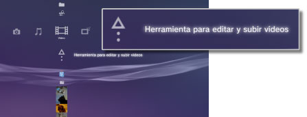
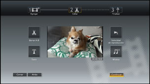

Vídeo > Edición de contenido de vídeo
Edición de contenido de vídeo
Puede editar contenido de vídeo guardado en el almacenamiento del sistema del sistema PS3™.
1. |
Seleccione |
|---|---|
|
 |
|
2. |
Seleccione (Crear nuevo vídeo). |
3. |
Seleccione |
4. |
Edite el vídeo. |
|
 |
|
5. |
Seleccione [Finalizar]. |
 (Vídeo) > (Herramienta para editar y subir vídeos).
(Vídeo) > (Herramienta para editar y subir vídeos). (Editar), es posible eliminar determinadas escenas o añadir texto (o caracteres). Siga las instrucciones en pantalla para completar la operación. Es posible mostrar una vista previa del vídeo editado mediante la selección de
(Editar), es posible eliminar determinadas escenas o añadir texto (o caracteres). Siga las instrucciones en pantalla para completar la operación. Es posible mostrar una vista previa del vídeo editado mediante la selección de  .
.Notas
- Mediante la selección de
 (Agregar) en el paso 3, puede seguir añadiendo elementos de contenido y combinarlos en un archivo de vídeo.
(Agregar) en el paso 3, puede seguir añadiendo elementos de contenido y combinarlos en un archivo de vídeo. - El tiempo máximo de reproducción de contenido de vídeos editados es de una hora.
- Es posible añadir hasta 16 elementos de texto en una pantalla y hasta 200 elementos de texto en un archivo de vídeo editado.
- Sólo se pueden usar canciones preestablecidas como música de fondo para sus vídeos. Las canciones que se guardan en el almacenamiento del sistema del sistema PS3™ o en otro soporte de almacenamiento no se pueden utilizar.
Tipos de archivos que pueden editarse
Los siguientes tipos de archivos se pueden editar usando (Herramienta para editar y subir vídeos).
- Contenido de vídeo que se ha guardado en el almacenamiento del sistema desde un soporte de almacenamiento o un dispositivo de almacenamiento masivo USB (software del sistema versión 3.40 o posterior).
- Contenido de vídeos descargado en el almacenamiento del sistema desde un
 (Navegador de Internet) (software del sistema versión 3.40 o posterior).
(Navegador de Internet) (software del sistema versión 3.40 o posterior).
Notas
- Los vídeos guardados en el almacenamiento del sistema antes de actualizar el software del sistema a la versión 3.40, los vídeos protegidos mediante derechos de autor y el contenido con restricciones de control paterno no pueden editarse.
- Tenga cuidado de no infringir la propiedad intelectual de otros.